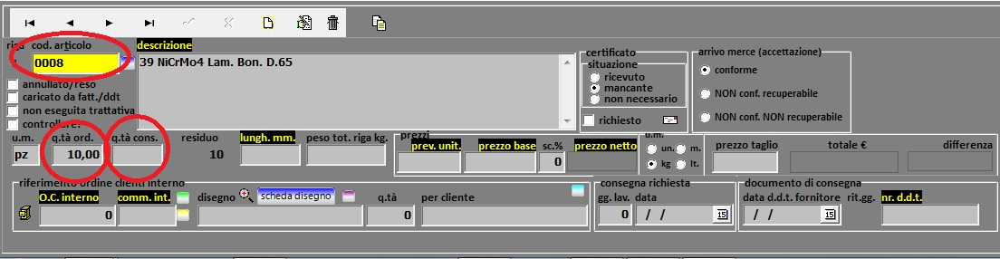

premessa importante
Questa guida tratta di Prod, software per la gestione della produzione (come si intuisce dal nome!),
le cui caratteristiche principali sono illustrate nel paragrafo informazioni generali;
è prevista per uso interno della marpa srl, Cologna Veneta, Verona ed ogni utilizzo esterno è vietato.
Eviterò di soffermarmi su particolari evidenti, tipo "fare clic sulla X in alto a destra per chiudere la finestra"
oppure "nella gestione clienti si trovano le anagrafiche dei clienti".
Il software è stato sviluppato per essere quanto più possibile user friendly ma nonostante ciò
alcune operazioni sono così trasparenti da non essere evidenti oppure non è stato possibile renderle immediatamente intuitive.
L'unica cosa "nascosta" ma utilissima è l'uso del tasto destro del mouse:
in qualsiasi punto del programma è possibile richiamare il menu generale per accedere ad una sua parte senza dover chiudere o ridurre ad icona quello che si sta facendo:
spiegazione del video:
|
Alcune altre cose molto utili ma non immediatamente intuibili:
- F1 premuto su un campo dà, quando previsto, indicazioni sull'operazione che si sta eseguendo
- F2 premuto su un campo dà, quando previsto, un elenco dei dati che possono essere richiamati
- lasciando l'indicatore del mouse su un oggetto di Prod (un campo, un'icona, ecc.) viene spesso visualizzata la descrizione della sua funzione:
- OC = Ordine Cliente
- OA = Ordine di Acquisto
- DdT = Documento di Trasporto
- PC = computer (Personal Computer)
- menu: apre ed elenca tutte le voci del menu di Prod e consente di saltare subito ad una di esse
- inizio argomento: salta all'inizio del paragrafo (argomento) che si sta leggendo
- approfondimenti: tratta argomenti al di fuori delle voci di menu di Prod ma molto utili al suo utilizzo ottimale; le sezioni principali sono come fare per... e forse non sapete che....
- argomenti: presenta un elenco di colegamenti in base all'argomento ricercato, nel caso non si riesce a trovarlo diversamente
- inizio: salta all'inizio assoluto di questa guida
informazioni generali
Come si intuisce dal nome, Prod è ideato per gestire la produzione, in particolare di un'azienda metalmeccanica.
Produzione in senso molto lato, perché molte operazioni sono collegate e la produzione non si preoccupa solo di sfornare pezzi
ma di controllare gli ordini, le lavorazioni, gli acquisti, le consegne e via dicendo.
Si fa prima dire quello che Prod non fa: non fa amministrazione (fatture e contabilità; attualmente non vengono gestiti i d.d.t.
ma sono in progetto), non fa il caffè, non parla, ma per il resto direi che fa un po' tutto (!) ;-).
Una peculiarità importante consiste nella possibilità di associare a vari elementi (clienti, fornitori, ordini, ecc.) note libere ed allegati di vario genere
in modo da avere subito tutto a disposizione senza "carte" né ricerche all'esterno del software.
Un breve elenco delle funzionalità principali:
- offerte ai clienti: non solo l'archiviazione per avere uno storico ma l'invio via mail, la creazione di revisioni dell'offerta e la trasformazione (si spera!) in ordine. È possibile avere resoconti sulle offerte diventate ordini, su quelle aperte e quelle da richiamare.
- ordini clienti: rappresenta il cuore di Prod. Tutte le altre operazioni sono collegate in qualche modo alla gestione degli ordini: le offerte da cui origina l'ordine, le lavorazioni che da esso derivano, gli ordini d'acquisto per il fabbisogno di produzione, le non conformità, i tempi di lavorazione, i conti lavoro esterni e la loro situazione, i trasporti e molto altro. Gli ordini prevedono l'archiviazione di tutti i dati che concorrono alla sua definizione: riferimenti interni, riferimenti del cliente, note libere, allegati di qualsiasi tipo (vedere formato documenti ") e via dicendo. Dagli ordini si possono ricavare numerosissimi resoconti e statistiche, cito solo la resa delle commesse, i confronti tra tempi preventivati e consuntivati, l'elenco e quantificazione dei costi sostenuti, la schedulazione teorica e programmata dei lavori, i tempi di consegna e via dicendo.
- ordini di acquisto: spesso collegati all'ordine cliente, danno soprattutto il resoconto di quanto deve ancora arrivare e di quanto è stato speso per l'ordine cliente. Ogni acquisto può essere collegato ad una singola commessa per quantificarne poi i costi.
- ordini di trasporto: offrono l'opportunità di raccogliere diverse offerte per un trasporto in modo automatico via mail, di consulatare lo storico per trasporti analoghi e di collegarne il costo all'ordine cliente.
- magazzino: registra le uscite ed entrate di materiale, particolarmente utile per tracciare queste operazioni ed ancor pi` per ottenere la situazioni dei conto lavoro esterni (usciti e/o rientrati), oltre che per le consegne parziali.
- non conformità: vengono registrati tutti gli "errori" sia interni che da fornitori o da clienti; in quest'ultimo caso sarà verranno poi quantificati nella valutazione dell'esito degli ordini.
- manutenzioni: interventi ai macchinari.
- indicatori: danno una serie di resoconti sull'attività, utili sia alla Direzione che al conseguimento e riesame della certificazione ISO (TÙ in particolare). Aluni esempi di indicatori: rendimento commesse, quantità e tempi consegne ai clienti, carico macchine da OC aperti, conformità consegne, valutazione automatica fornitori, valorizzazione acquisti e lavorazioni relativi ad ordini aperti e molto altro.
- software in moduli esterni a fianco delle macchine per la raccolta dei tempi ed invio di informazioni
Un elemento comune a tutte le videate in cui è prevista una gestione dei dati (caricamento, modifica, cancellazione) è questo "navigatore":

| porta all'inizio dell'archivio (prima registrazione) | |
| porta alla fine dell'archivio (ultima registrazione) | |
| porta alla registrazione precedente | |
| porta alla registrazione successiva | |
| oppure | carica una nuova registrazione |
| oppure | consente di modificare la registrazione correntemente visualizzata |
| conferma (salva, registra) la registrazione corrente; si abilita solo durante il caricamento o la modifica | |
 | aggiorna l'archivio su cui si sta lavornado, permwettendo così di vedere eventuali caricamenti, modifiche o cancellazioni fatti da un altro utente. Tutte le operazioni cercano di considerare subito gli interventi di altri utenti ma questa operazione assicura un aggiornamento istantaneo. |
 | annulla la registrazione corrente; si abilita solo durante il caricamento o la modifica. In fase di modifica, non salva le modifiche e fa tornare la registrazione com'era in origine. Questa operazione non è possibile dopo la conferma della registrazione. In caso di caricamento, non salva la registrazione e viene completamente |
| cancella la registrazione correntemente visualizzata (chiede prima conferma) |
Alcune forse noiose ma necessarie informazioni "tecniche": il software "gira" su sistema operativo Windows,
è stato testato nelle versioni 7 e 10. Importante: è necessario un monitor che abbia una risoluzione di 1920x1080 pixels.
Il database è un Postgresql, tra i più sicuri e veloci.
L'installazione del client richiede pochi mega su disco; anche quella su server non è molto ingombrante.
Le dimensioni dal database crescono ovviamente a seconda dei dati caricati ma tenete presente che caricando parecchie immagini raggiungono facilmente qualche giga (attualmente circa 8Gb).
Il software prevede l'utilizzo in multiutenza in rete locale; attualmente è operativo con una quandicina di utenti contemporanei.
Può essere utilizzato in rete geografica mediante l'installazione di una VPN; le performance sono date dalla banda di rete, che deve essere buona, e dall'hardware del PC client.
Se la VPN, la banda o l'hardware locale costituiscono un problema, può tranquillamente essere utilizzato in remoto mediante un software come AnyDesk.
Per la cronaca, il software è sviluppato in parte in Delphi ed in parte in Lazarus, entrambi evoluzioni del Pascal. Utilizzatori di questi linguaggi sono, tra gli altri, la NASA e l'European Space Agency
ed il software più conosciuto sviluppato in Delphi è Skype. Il linguaggio non è tra i più diffusi ma pur avendo una lunga tradizione ` tuttora vivissimo e vegetissimo (!)
e continuamente aggiornato dalla californiana Embarcadero e da una fitta ed attiva comunità. La sua peculiarità consiste nel poter sviluppare praticamente qualsiasi software
ed essere velocissimo nell'esecuzione in quanto non necessita di interpreti; esso inoltre non non necessita di librerie esterne con conseguenti problemi di aggiornamento.
la videata principale
Appena lanciato Prod, si presenta questa videata:

Un esempio animato delle voci disponibili:
Cosa si può fare da qui?
- lanciare una voce del menu:
- fare clic col tasto destro per accedere ad una voce del menu:
- avere subito l'elenco degli OA scaduti (compreso il giorno corrente):
- avere la situazione delle commesse scadute:
- lavorazioni interne:
- non eseguite
- iniziate o eseguite
- lavorazioni esterne:
- non ancora uscite
- uscite e non rientrate
- uscite e rientrate
- richiamare il disegno
- richiamare l'OC
- elencare gli OA riferiti alla commessa
- visualizzare l'elenco della merce in arrivo, in partenza e da ritirare.
- sapere chi è assente oggi e chi ha comunicato assenza in futuro
- visualizzare avvisi per tutti gli utenti di Prod, per il monitor esterno e solo per l'operatore corrente Nella sezione "gestione info" è possibile caricare un messaggio che sarà, a seconda della destinazione scelta:
- visualizzato da tutti gli utenti che usano Prod
- visualizzato solo nella sezione avvisi del monitor informativo esterno
- visualizzato solo per l'utente di Prod selezionato
- consultare l'elenco delle offerte a clienti aperte:
- sapere quale merce è stata mandata in conto lavoro e non è rientrata:
- avere l'elenco di tutte le lavorazioni scadute fino ad oggi compreso
- sapere qual è l'anno corrente impostato (vedere cambio anno):
- sapere qual è l'utente che ha effettuato il login:
- sapere se la versione di Prod che si sta usando è aggiornata:
- ottenere informazioni sul giorno corrente:
- ottenere informazioni sulle consegne delle 3 più importanti aziende del gruppo Danieli:
- avere la situazione esatta in tempo reale delle lavorazioni in corso:
- avere un resoconto sul carico macchine:


Importante notare che
Vengono elencate tutte le commesse scadute (con consegna concordata fino ad oggi compreso); per ognuna vengono elencate le lavorazioni previste con relativa situazione:

Vengono elencate tutte le offerte emesse a clienti non concluse. Vengono evidenziate quelle che devono essere richiamate e quelle che sono già state richiamate almeno una volta; facendo clic su una di queste due legende si filtra l'elenco in modo che riporti solo quelle del tipo scelto. Per tornare all'elenco generale fare clic su "elencare tutto".
Capita spesso di chiedersi "ma la merce inviata al tal fornitore è rientrata?", "quando l'ho inviata?", "con quale DdT?", "per quando è prevista la consegna?". Questo elenco dà la risposta a tutte queste domande, evidenziato i ritiri scaduti (la merce dovrebbe essere già pronta per il ritiro), quelli che saranno pronti a breve oppure più avanti. Facendo doppio clic su una riga si richiama l'OC che l'ha generata.


E' importante che corrisponda a chi sta attualmente utilizzando il PC perché per alcune operazioni viene registrato l'autore e per l'invio mail viene prelevata la firma dell'utente corrente.

Se la versione in uso non è aggiornata, Prod può spesso essere comunque usato ad eccezione di aggiornamenti critici che ne peossono pregiudicare il fuznionamento. Si consiglia comunque di aggiornarlo sempre seguendo la procedura descritta nella sezione moduli aggiuntivi.

I dati vengono aggiornati in tempo reale e riportano l'esatta situazione di quello che sta avvenendo nel reparto produzione. Per ogni macchina viene indicato il nome dell'operatore, il lavoro che sta facendo e da quando è iniziato e gli altri lavori fatti e conclusi nella giornata. Se la macchina non sta attualmente lavorando, viene evidenziata la scritta
Per avere un elenco di tutti i lavori aperti, di quelli in fase di esecuzione, di quelli completati oggi e nei giorni precedenti, fare clic sul pulsante "lavori aperti" in alto:

archivi
In questa sezione vengono gestiti tutti i dati che verranno poi richiamati nelle altre sezione di Prod. Non si tratta di semplice archiviazione ma questi dati possono venire gestiti nel modo più ampio possibile: ad esempio da clienti e fornitori può essere inviata direttamente una mail a vari referenti, ad ognuno possono essere associati numerosi documenti scannerizzati (v. formato documenti), si possono effettuare ricerche qualsi per ogni campo, possono essere stese ampie note, ecc.
...in fase di sviluppo...
offerte a clienti
È utile archiviare le offerte fatte ai clienti per avere un documento di riferimento quando l'offerta (si spera) diventerà ordine,
per avere un resoconto sulla percentuale di offerte che si trasformano in ordini e per avere un promemoria sulle offerte da cui sollecitare una risposta.
È possibile "versionare" un'offerta, partendo cioè dall'offerta iniziale si possono portare delle variazioni tenendo però traccia dei cambiamenti.
...in fase di sviluppo...
ordini clienti
...in fase di sviluppo...
ordini di acquisto
...in fase di sviluppo...
magazzino
...in fase di sviluppo...
magazzini interni
Per magazzino interno si intende un insieme di materiale dedicato ad uno scopo specifico, in particolare per la produzione per un cliente.
Un magazzino, o meglio: ogni elemento di un magazzino viene associato ad una commessa.
Questo materiale può benissimo essere stoccato fisicamente assieme a tutto l'altro materiale per altri clienti;
la funzione di Prod è di estrarre questi pezzi per tenerne sotto controllo carico, scarico, giacenza e merce in arrivo.
Definizione (creazione) di un magazzino interno
Un magazzino interno viene creato (caricato) come una normale riga di OC,
con la sola differenza che viene spuntata la casella determina magazzino sotto al numero commessa:Carico di un magazzino interno
Per caricare (aggiungere quantià) un magazzino interno è sufficiente caricare un OA specificando in una riga la commessa che identifica il magazzino interno.Scarico di un magazzino interno
Per scaricare un magazzino interno (togliere quantità) è sufficiente indicare nel campo commessa-magazzino di una riga OC esistente la commessa-magazzino che si vuole scaricare.- questo modo di operare prevede l'esistenza di un OC con una o più commesse che hanno la sola funzione di commesse-magazzino (determina magazzino) e non vengono quindi trattate come normali commesse
- è opportuno indicare la commessa-magazzino nella riga OC appena ha inizio la lavorazione (messa in produzione) in modo che venga subito tolta dalla disponibilità
- l'indicazione della commessa-magazzino nella riga OC scarica tutta la quantità della riga OC; trattandosi di un OC che va ad attingere in un magazzini, si presume che ne venga lavorata l'intera quantità
Situazione di un magazzino interno
Per consultare la situazione di un magazzino interno si può utilizzare la stessa icona quadrata bianca e gialla cerchiata di verde dell'immagine precedente.- caricato: tutta la quantità arrivata finora (anche se poi scaricata)
- in arrivo: quantià ordinata ma non ancora arrivata
- scaricato: tutta la quantità scaricata (consegnata al cliente) finora
- giacenza: quantità fisicamente presente in magazzino e non ancora lavorata
Questa commessa non comparirà nei resoconti degli OC.
Mantenendo l'esempio di prima (Definizione (creazione) di un magazzino interno):

Importante notare che il solo caricamento dell'OA impegna il magazzino interno ma non lo carica; il caricamento vero e proprio avviene quando si indica la quantità consegnata, quando cioè la merce è arrivata.
Riassumendo: creo un OA indicando 2 come quantità ordinata nel campo q.tà ord. e la commessa-magazzino: nel resoconto del magazzino interno mi indicherà che ci sono 2 pezzi ordinati (ma non caricati); quando arriva la merce, indico 2 (oppure 1, per consegne parziali) nel campo q.tà cons. della riga OA e questa quantità 2 passa da ordinato a caricato. Naturalmente posso avere situazioni miste in cui c'è una quantità caricata ed una quantità solo ordinata ma non ancora arrivata.
Questa commessa può essere caricata "manualmente" digitandone il numero oppure può essere selezionata da un elenco: nell'esempio qui sotto, facendo clic sul quadrato bianco e giallo cerchiato in verde si apre una finestra con l'elenco di tutte le commesse-magazzino aperte del cliente dell'OC su cui si sta lavorando e facendo doppio clic su una riga di questo elenco se ne carica la commessa.
Importanti precisazioni:
La situazione dà l'elenco delle commesse-magazzino del cliente dell'OC corrente e per ognuna:
Elenco delle righe di OC relative ad una commessa-magazzino
non conformità
...in fase di sviluppo...
manutenzioni
...in fase di sviluppo...
indicatori
...in fase di sviluppo...
utilità
cambio anno
Per anno corrente si intende l'anno su cui si sta lavorando, usualmente corrispondente all'anno in corso ma per comodità può essere anche l'anno appena trascorso.Non è mportante né necessario che l'anno di Prod sia impostato sull'esatto anno corrente, l'utilità sta solo nel rendere più semplice e veloce la ricerca come indicato in È possibile richiamare un ordine clienti o fornitori senza indicare l'anno davanti al progressivo
approfondimenti
formato documenti
I documenti gestiti in Prod possono essere di qualsiasi tipo previsto nel PC in cui è installato.
Più chiaramente: si possono allegare PDF a clienti e fornitori purché sia installato Acrobat Reader o software equivalente;
si possono associare disegni in TIFF purché ci sia un software in grado di leggerli.
Disegni ed immagini sono stati testati
con i formati JPG, TIFF, PNG, BMP ma si possono gestire tutti quelli previsti dal software installato.
I file AutoCAD (.DWG) possono essere gestiti pureché, ancora una volta sia installato AutoCAD o un software AutoCAD reader
ma sono sconsigliati perché in genere l'apertura di questo tipo di file è piuttosto lenta.
Stesso discorso per i testi: Prod è stato usato con .DOC, .DOCX., .ODT purché siano installati nel PC in uso i rispettivi software in grado di leggerli.
Possono essere gestiti anche fogli elettronici come .XLS e .ODS.
Importante: i documenti associati (ad esempio a clienti e fornitori) possono essere
letti, stampati e salvati ma non modificati; le modifiche apportate andranno perse.
come fare per...
...creare un segnalibro
spiegazione del video:
- si desidera creare un segnalibero per il cliente correntemente visualizzato in modo da potervi ritornare agevolmente
- clic su utilità
- clic su imposta segnalibro
- si consultano altri clienti
- per tornare al cliente "segnato": clic col tasto destro
- il tipo (clienti) ed il codice vengono visualizzati sull'estremità destra per facilitarne il riconoscimento
- fare clic sul segnalibro ed il cliente "segnato" viene immediatamente richiamato
- se il segnalibro non serve più, cancellarlo richimando i segnalibri col tasto destro e facendo clic su azzera segnalibro sotto al segnalibro da cancellare
I segnalibri vengono tutti persi all'uscita da Prod
...uscire da Prod senza dover chiudere ogni singola finestra
Talvolta è necessario chiudere parecchie finestre prima di arrivare alla videata principale per uscire da Prod ma c'è un metodo veloce per farlo immediatamente: fare clic col tasto destro e poi fare cli su esci da Prod:
E' sempre bene uscire completamente da Prod prima di spegnere il PC o prima dell'effettuazione di un backup automatico.
...effettuare una ricerca per un qualsiasi campo (o quasi)
Nei menu in alto c'è sempre la possibilità di effettuare ricerche per i campi più usati (ad es. codice e descrizione) ma talvolta può servire fare una ricerca per altri campi (ad es. per lo Stato di un cliente). Per fare questo è sufficiente fare clic all'interno di una campo il cui nome è scritto in giallo su nero (vedi immagine qui sotto), battere F2 ed indicare una qualsiasi parte del valore da ricercare (salvo casi particolari). La ricerca è sempre "case insensitive", cio` non fa differenza tra maiuscole e minuscole. Ad es., per cercare Germania si può indicare ger e verrà trovato sia Germania che Germany; se si indicare tonia verranno riportate sia Estonia che Lettonia. Il risultato della ricerca verrà mostrato all'interno di una finestra e qui si può fare doppio clic per richiamare l'elemento che interessa oppure chiudere la finestra con la X in alto a destra o con ESC.
...inviare una mail ad un referente di un cliente o fornitore
Richiamare il cliente o fornitore, fare clic sul nome del referente e poi sull'icona :
...inviare una mail di richiesta di certificato ad un fornitore
La mail verrà presentata già compilata con il nome del referente per i certificati (se impostato) ed i riferimenti al loro ddt di invio.Richiamare l'ordine di acquisto, fare clic sulla riga che interessa e poi sull'icona :
forse non sapete che...
...è possibile richiamare un ordine clienti o fornitori senza indicare l'anno davanti al progressivo.
Ad esempio, se l'anno correnteè 2020, per cercare l'ordine 2020123 è possibile indicare solo 123 e per cercare l'ordine 2020003 è possibile indicare solo 3. Questo solo se l'ordine ricercato fa parte dell'anno correntemente in corso (v. cambio anno). Se l'ordine ricercato è dell'anno precedente a quello in corso, se ne può indicare comunque solo il progressivo preceduta del simbolo "-"" (meno). Ad esempio, se l'anno corrente è 2020, per cercare 2020123 indicare -123 e per cercare l'ordine 2019003 indicare -3....è possibile eseguire una ricerca indicando solo lettere e numeri "base".
Più chiaramente, si può fare a meno di preoccuparsi di indicare simboli di punteggiatura (punti, virgole, ecc.) e/o spazi. Ad esempio, se si cerca il disegno 0.123.456.Z si può scrivere solo 0123456Z; se si cerca il nominativo Airoldi & Belgeri si può scrivere solo airoldibelg. Non ci si deve inoltre preoccupare di scrivere in maiuscolo o minuscolo e quasi sempre, come nell'esempio precedente, è possibile indicare solo una parte del valore da cercare....è possibile risalire immediatamente al numero di settimana corrente.
Senza consultare calendari che non riportano mai il numero della settimana, nella videata principale sono riportati sia il numero del giorno che della settimana correnti:

...è possibile effettuare la ricerca di un nominativo contemporaneamente tra clienti e fornitori.
Se non si è certi che il nominativo che si sta cercando sia un cliento od un fornitore, dai rispettivi archivi si può effettuare la ricerca con questa icona:

Una volta selezionato il nominativo dall'elenco, Prod si posizionerà automaticamente nell'archivio giusto....è possibile individuare automaticamente il cliente od il fornitore su Google Maps.
Semplicemente facendo clic sull'omonimo pulsante:
verrà lanciato Google Maps posizionato sulla località del nominativo attualmente visualizzato. I dati del nominativo devono essere naturalmente descritti con esattezza ed il PC su cui si lavora deve avere accesso ad internet con un browser adeguato....è possibile creare dei "segnalibri" per poi richiamarli agevolmente.
Esempio classico: sto lavorando su un OC (non il primo o l'ultimo, perché si possono facilente raggiungere con le icone del navigator) e devo per qualche motivo richiamarne un altro. Per non dover segnare il numero dell'OC su cui sto lavorando, o peggio, dovermelo ricordare, posso creare un segnalibro su questo OC in modo che poi possa tornarvi semplicemente richiamando questo segnalibro. Per creare il segnalibro per l'elemento corrente, che può essere un OC, un OA, un cliente o qualsiasi altro elemento di Prod, basta richiamare utilità dalle voci di menu in alto e poi fare clic su imposta segnalibro, usualmente l'ultima voce del menu. Non succede visibilmente nulla ma in questo modo si srà creato un segnalibro sull'elemento corrente che sarà possibile richiamare da qualsiasi posizione (ad esempio si può richiamare un OC dall'archivio clienti) facendo clic col tasto destro:
Alla destra dell'esagono azzurro viene riportato il tipo di segnalibro (ad es. OA, clienti, ecc.) ed il codice indirizzato: per richiamarlo basta farci clic sopra.
Per cancellare un segnalibro, fare clic su azzera segnalibro sotto al segnalibro da cencellare.
Tenere presente che i segnalibri vengono mantenuti solo fino a quando di esce da Prod: al momento di uscire verranno tutti persi.
moduli esterni
lavorazioni alla macchina
...in fase di sviluppo...
pannello informativo esterno
...in fase di sviluppo...
aggiornamento software
...in fase di sviluppo...
argomenti
commesse
...in fase di sviluppo...
caricamento dati
...in fase di sviluppo...
stampe
...in fase di sviluppo...